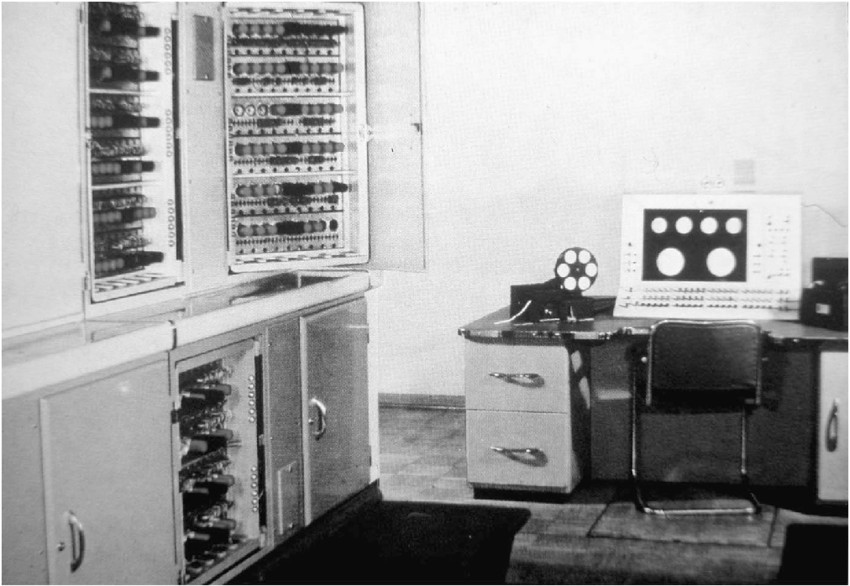
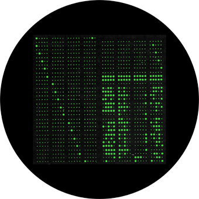
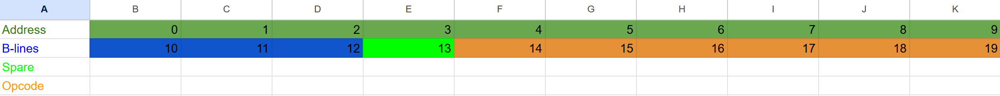

ld 6 // a = 10, program to count down from 10 to 0 sub 5 // a -= 1 jgt_a 7 // data 2, go back -1 instructions add 5 // a += 1 as we count to -1 stop // a now = 0 data 1 // count down from 10 data 10 data 1
Electronic Store (Memory)
Ferranti Mark 1 Report
For my history of computing project at University of Southampton
This is my emulation of the Ferranti Mark I (also know as the Mark II). It is based of Alan Turing's First Manual for the Ferranti Mark I written around 1949/50 (Turing, 1950). This emulation aims to be faithful to the machines instruction semantics while focusing on usability. I therefore abstract I/O and present a simplified hardware interface
The Ferranti Mark was the world's first commercial computer, delivered in 1951. It was designed as an extension of the Manchester Mark 1 which itself extends from the Manchester Baby (also known as the SSEM) which was the first stored program computer. I first give an overview of the Architectural design of the Ferranti Mark 1 in its historical context and then discuss the emulation specific details.

Image from (Paul Doornbusch, 2017)
1. Architectural design
Stored programs (Von-Neumann)
The ENIAC (1945) was a denary valve computer and had no stored program. The program rather was the physical configuration of the machine using plugboards and patch cables. It therefore took days to program and had no index registers for structured data (see B-lines section). The developers realised this and began developing EDVAC (completed 1949). While working on the EDVAC John von Neumann wrote "First Draft of a Report on the EDVAC" (von Neumann, 1945) which describe the von-Neumann architecture of stored programs. Programs were stored in mercury delay lines which were originally developed for Radar systems. The bits were stored as acoustic sound waves in the mercury maintained by a feedback loop. The tubes were extremely temperate sensitive, expensive, slow as they were serial access and toxic because of the mercury. The difficulties are described at (Kempf, 1961).
Williams tubes
While the EDVAC was being designed the Manchester Baby was the first (proof-of-concept) computer to run a stored program. It used the Williams tubes storage invented in 1948 (Williams & Kilburn, 1949). The Williams tubes stored data inside a CRT tube. The data was stored by writing sharp or blurred dots to the screen (corresponding to 1s and 0s). When electrons collide on the CRT phosphor they displace other electrons (secondary emission) which causes a local charge that was capacitively coupled to a sensing plate. This charge only lasts for about 0.2s so a feedback circuit rewrites the charge constantly similar to modern DRAM!

Image from (Computer Museum UvA, n.d.)
The data pattern on the CRT screen. Note that you would not be able to see this since it was covered with the metal charge detector.
Instruction design
Accumulator architecture
The Ferranti Mark 1, Manchester Mark 1 and the Baby did not use a multiple register architecture as modern CPUs / RISC processors do. Instead, they were all accumulator-based using a single register called the accumulator to execute instructions. This greatly simplifies the computer architecture, as no multiplexing logic is needed to connect different registers to execution units such as the ALU. However it is less instruction efficient as multiple swaps to memory have to be made for calculations with multiple variables. (This is analogous to a computer with RAM but only 1 register, or a calculator)
B-lines
The Manchester Baby, Mark I and Ferranti were all stored program Von-Neumann computers. However the preceding Manchester Baby did not have index registers (ability to do run-time memory addressing i.e. load value from location x), which is essential for structured data operations e.g. array[idx]. Therefore operations that required structured data such as summing an array had to be executed with self-modifying code that would mutate the load instruction to point to the next value. This created code, that was impossible to statically analyse and extremely difficult to debug.
To solve this problem "B-lines" (University of Manchester, 1998) were invented for the Manchester Mark 1. This was a tube that stored numbers you could add to an instruction e.g. where B[1] = 6, add 5 1 becomes add 11. this allowed for runtime addressing without self-modifying code being conceptually the same as load rDest rIdx operations. It was called the B tube to alphabetically fit in as the extended Baby had the A, C and D tubes. The Mark 1 had 2 B lines but the Ferranti had 8
2. Emulation details
The Ferranti Mark 1 used 40 bit words. Data could be stored as a 40 bit word while the instructions were 20 bit which allowed two instructions per word, The binary was little (bit)-endian because the computer was bit serial meaning that for addition it could start executing on the little bits once it received them. e.g. 1000 means 1 not 8. It also used 2's complement
Instruction format
10 bit address + 3 bit B-lines + 1 bit spare + 6 bit Opocode

Data was stored in main memory. This was a set of 16 Williams tubes which could store 1024 words each tube storing 64 words. However only 5-8 could be assumed available due to the difficulty of servicing (Turing, 1950, p. 45)
- With this in mind my emulator uses 8 tubes in main memory which also makes it easier to fit in a webpage
Tube variable storage
- 16 tubes storing 64 40-bit words for a total of 1024 words, (but only 5-8 available so I model 8)
- 1 B-line tube storing 8 20-bit words
- 1 C tube holding the 20-bit program counter and 20-bit instruction bit pattern
- 1 M tube holding 40-bit multiplicand
- 1 A tube holding the 80 bit accumulator
The computer also had a 655360 bit magnetic store (16.384k words) (Turing, 1950, p. 4) which I do not model in my emulation as it is related to machine level IO rather than program execution.
Loading the program
Programs for the Ferranti Mark 1, Manchester Mark 1 and the Baby were loaded from 5 bit punched paper tape. This was a 32 bit encoding using the ITA2 standard, to program an instruction you would input four characters (20 bits) e.g.
ld 10->R/T/->01010000000000100000
Turing's programming manual encourages the user to memorize the raw teleprinter character strings for programming and to think in that way rather than a higher level translated assembly. I do not follow that tradition and instead have produced a high level assembly language that 1:1 translates into the teleprinter characters that translate into the binary strings.
A program would therefore look like
ld 6 // a = 10, program to count down from 10 to 0
sub 5 // a -= 1
jgt_a 7 // data 2, go back -1 instructions
add 5 // a += 1 as we count to -1
stop // a now = 0
data 1 // count down from 10
data 10
data 1which would be typed into the teleprinter as
I/T/S/TN
U//HS/TI
///G////
E///////
R///////
E///////The punch tape from the teleprinter would then be loaded into the main memory. 2 20-bit instructions are packed into 1 40-bit word to save space
0110000000000010000010100000000000100110
1110000000000000010110100000000000101100
0000000000000000101100000000000000000000
1000000000000000000000000000000000000000
0101000000000000000000000000000000000000
1000000000000000000000000000000000000000Notation
- a: 80 bit accumulator
- au: Upper 40 bits
- al: Lower 40 bits
- M: Memory
- d: Multiplier
- s: Memory address, (the machine does not use any intermediates!)
- b: B line address
Instruction set (ISA)
| My Assembly language | 5-bit Encoding | 6-bit Machine Opcode | Description |
|---|---|---|---|
ld s, b | (/T) | 100000 | Load a = M[s + B[b]] |
ldn s, b | (TF) | 110110 | Load negative a = -M[s + B[b]] |
ld_dbl s, b | (TK) | 111110 | Load double word a = 2 · M[s + B[b]] |
swap | (/I) | 001100 | Swap accumulator halves, au, al = al, au |
clr | (T:) | 100100 | Clear accumulator a = 0 |
st_u s, b | (/E) | 010000 | Store upper half M[s + B[b]] = au |
st_l s, b | (/S) | 010100 | Store lower half M[s + B[b]] = al |
st_l_clr s, b | (TA) | 111000 | Store lower half M[s + B[b]] = al, a = 0 |
st_or s, b | (TS) | 110100 | Store OR M[s + B[b]] = M[s + B[b]] | al |
st_u_pop s, b | (/A) | 011000 | Pop au to memory and zero M[s + B[b]] = au, a = a (mod 240) |
st_l_sftd s, b | (/U) | 011100 | Store lower then shift down, M[s + B[b]] = al, a ≫ 40 |
add s, b | (TI) | 101100 | Add a += M[s + B[b]] |
add_u s, b | (/J) | 011010 | Add to upper; a += M[s + B[b]] ≪ 40 |
sub s, b | (TN) | 100110 | Subtract a -= M[s + B[b]] |
norm s, b | (/(a)) | 001000 | Position of MSB: au = ⌊ log2(M[s + B[b]]) ⌋ |
popcnt s, b | (/R) | 001010 | a += count_set_bits(M[s + B[b]]) ≪ 40 |
ld_mul s, b | (/C) | 001110 | Load multiplier d = M[s + B[b]] |
add_prod s, b | (/N) | 000110 | Add product a += d · M[s + B[b]] |
sub_prod s, b | (/1/4) | 000010 | Subtract product a -= d · M[s + B[b]] |
and s, b | (TR) | 101010 | Bitwise AND a &= M[s + B[b]] |
or s, b | (TD) | 110010 | Bitwise OR a |= M[s + B[b]] |
neq s, b | (TJ) | 111010 | Bitwise XOR a ⊕ M[s + B[b]] |
jmp_a s, b | (/P) | 001101 | Jump (Absolute) C = M[s + B[b]] |
jmp_r s, b | (/Q) | 011101 | Jump (Relative) p += M[s + B[b]] |
jgt_a s | (/H) | 000101 | Jump to s if a ≥ 0 |
jgt_r s | (/M) | 000111 | Jump relative p += s if a ≥ 0 |
jmp_a_b s | (/T) | 000001 | Jump to s if b_sign = 0 |
jmp_r_b s | (/O) | 000011 | Jump relative p += s if b_sign = 0 |
stop | (/G) | 001011 | Halt program |
set_b s, b | (TT) | 100001 | Set B-line B[b] = M[s] |
sub_b s, b | (TL) | 101001 | Subtract from B-line B[b] -= M[s] |
store_b s, b | (TZ) | 110001 | Write B-line to memory M[s] = B[b] |
When the machine was initially initialized, all the bits in the Williams tubes would be random. This meant that unless your program specified an explicit halt, if it ran into out-of-bounds memory, it would just execute random instructions, which is very difficult to debug, as it wouldn't throw an error. To mitigate this, I have made it easier for the user by adding the abstraction of all memory being initialized to zero, which could be done on a real machine if you wrote a bootstrap program. I also block the von Neumann aspect writing anything other than data to memory because accidentally doing this makes the machine incredibly difficult to debug as referencing a wrong memory location doesn't throw an error but rather results in garbage in garbage out (GIGO) execution. Code mutation is not needed in this machine due to the B lines
I abstract the emulation of a control panel and instead in my emulation just show the raw contents of the B tubes. This removes unnecessary complexity to end users programming the machine as I am more focused on the programming style than the hardware interface
To use the emulation click `run` or press Ctrl + Enter. Press reset (right of run) to reload the program and run again.
References
- Computer Museum UvA. (n.d.). The Williams-tube electrostatic storage device. Universiteit van Amsterdam. https://ub.fnwi.uva.nl/computermuseum/williamstube.html
- Kempf, K. (1961). Historical Monograph: Electronic Computers within the Ordnance Corps. U.S. Army Ordnance Corps. https://ftp.arl.mil/~mike/comphist/61ordnance/chap3.html
- Turing, A. M. (1950). Programmers' Handbook for the Manchester Electronic Computer Mark II. University of Manchester. https://curation.cs.manchester.ac.uk/computer50/www.computer50.org/kgill/mark1/RobertTau/turing.pdf
- University of Manchester. (1998). The Mark 1. 50th Anniversary of the Manchester Baby. https://curation.cs.manchester.ac.uk/computer50/www.computer50.org/mark1/notes.html
- von Neumann, J. (1945). First Draft of a Report on the EDVAC. Moore School of Electrical Engineering, University of Pennsylvania. https://web.mit.edu/sts.035/www/PDFs/edvac.pdf
- Williams, F. C., & Kilburn, T. (1949). A storage system for use with binary-digital computing machines. Proceedings of the IEE - Part III: Radio and Communication Engineering, 96(40), 81–100.
- Doornbusch, P. (2017). Early computer music experiments in Australia and England. Organised Sound, 22(2), 297–307. https://doi.org/10.1017/S1355771817000206